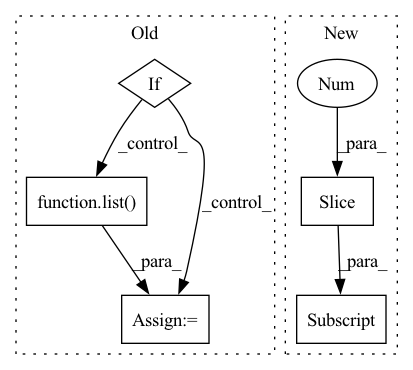

Pattern ID :13630
Before Change
target_node_indexes is not None
and isinstance(target_node_indexes, _typing.Sequence)
):
if hasattr(data, "train_mask"):
target_node_indexes: _typing.Sequence[int] = torch.where(
getattr(data, "train_mask")
)[0]
else:
target_node_indexes: _typing.Sequence[int] = list(
np.arange(0, data.x.shape[0])
)
self.__edge_index_map: _typing.Dict[
int, _typing.Union[torch.Tensor, _typing.Sequence[int]]
] = {}After Change
):
self.__pyg_neighbor_sampler: torch_geometric.data.NeighborSampler = (
torch_geometric.data.NeighborSampler(
edge_index, list(sampling_sizes[::-1] ), target_nodes_indexes,
transform=_neighbor_sampler_transform, batch_size=batch_size,
num_workers=num_workers, shuffle=shuffle, **kwargs
)In pattern: SUPERPATTERN
Frequency: 3
Non-data size: 5
Instances Fragment ID: 45737789
Project Name: thumnlab/autogl
Commit Name: 022bc607ce1604750793856ffe39afc8d40b41a0
Time: 2021-05-12
Author: null
File Name: autogl/module/train/sampling/sampler/neighbor_sampler.py
M Class Name: NeighborSampler
N Class Name: NeighborSampler
M Method Name: __init__(7)
N Method Name: __init__(5)
M Parent Class: TargetDependantSampler,_typing.Iterable
N Parent Class: collections.Iterable,torch.utils.data.DataLoader
M File Name: autogl/module/train/sampling/sampler/neighbor_sampler.py
N File Name: autogl/module/train/sampling/sampler/neighbor_sampler.py
M Start Line: 24
M End Line: 57
N Start Line: 21
N End Line: 33
Before Change
for key_label in self.label_names.keys():
clicks = d[key_label]
clicks = list(np.array(clicks).astype(int))
if self.depth_first:
for i in range(len(clicks)):
clicks[i] = list( np.roll(clicks[i], 1))
all_guidances[key_label] = self._apply(clicks, factor)
d[self.guidance] = all_guidances
return d
After Change
// Assume channel is first and depth is last CHWD
original_shape = d[meta_dict_key]["spatial_shape"]
current_shape = list(d[self.ref_image].shape)[1:]
// in here we assume the depth dimension is in the last dimension of "original_shape" and "current_shape"
factor = np.array(current_shape) / original_shape
Fragment ID: 45737790
Project Name: project-monai/monailabel
Commit Name: 6ad3aaad098238115cba1e65df6726ca19a4e474
Time: 2021-11-11
Author: diazandr3s@gmail.com
File Name: monailabel/deepedit/multilabel/transforms.py
M Class Name: AddGuidanceFromPointsCustomd
N Class Name: AddGuidanceFromPointsCustomd
M Method Name: __call__(2)
N Method Name: __call__(2)
M Parent Class: Transform
N Parent Class: Transform
M File Name: monailabel/deepedit/multilabel/transforms.py
N File Name: monailabel/deepedit/multilabel/transforms.py
M Start Line: 747
M End Line: 766
N Start Line: 738
N End Line: 738
Before Change
// high precision rules for splitting conjunctions
ents = []
matches = self.matcher(doc)
if len(matches) == 1:
_, start, end = matches[0]
span = doc[start:end]
toks = list( span)
anchor = toks[-1]
noun_chunks = list(span.noun_chunks)
if len(noun_chunks) > 1:
// noun chunks detected, use them
ents = self.process_noun_chunks(anchor, entity, noun_chunks, text)
if len(ents) < 2:
ents = self.process_pos_tags(anchor, entity, text, toks)
return entsAfter Change
rule_name="spacy noun chunk tags",
)
)
for chunk in noun_chunks[:-1] :
if anchor in chunk.conjuncts:
ents.append(
_copy_ent_with_new_spans( Fragment ID: 45737793
Project Name: astrazeneca/kazu
Commit Name: 6a4876f27e311cce0439141b3ab4744b5a86ba40
Time: 2022-11-30
Author: richard.jackson4@astrazeneca.com
File Name: kazu/steps/ner/entity_post_processing.py
M Class Name: SplitOnConjunctionPattern
N Class Name: SplitOnConjunctionPattern
M Method Name: run_conjunction_rules(4)
N Method Name: run_conjunction_rules(4)
M Parent Class:
N Parent Class:
M File Name: kazu/steps/ner/entity_post_processing.py
N File Name: kazu/steps/ner/entity_post_processing.py
M Start Line: 71
M End Line: 84
N Start Line: 44
N End Line: 89